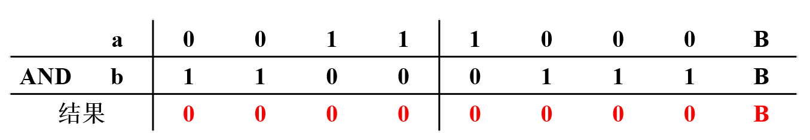
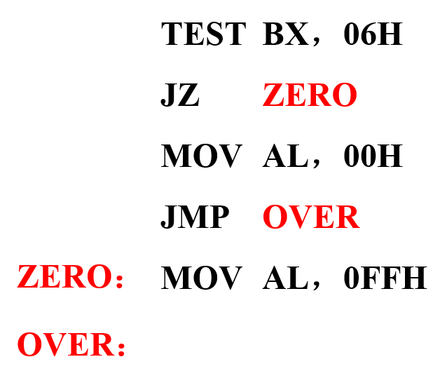
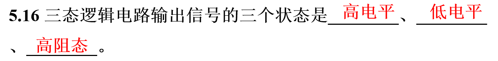
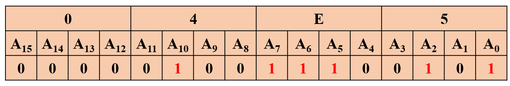
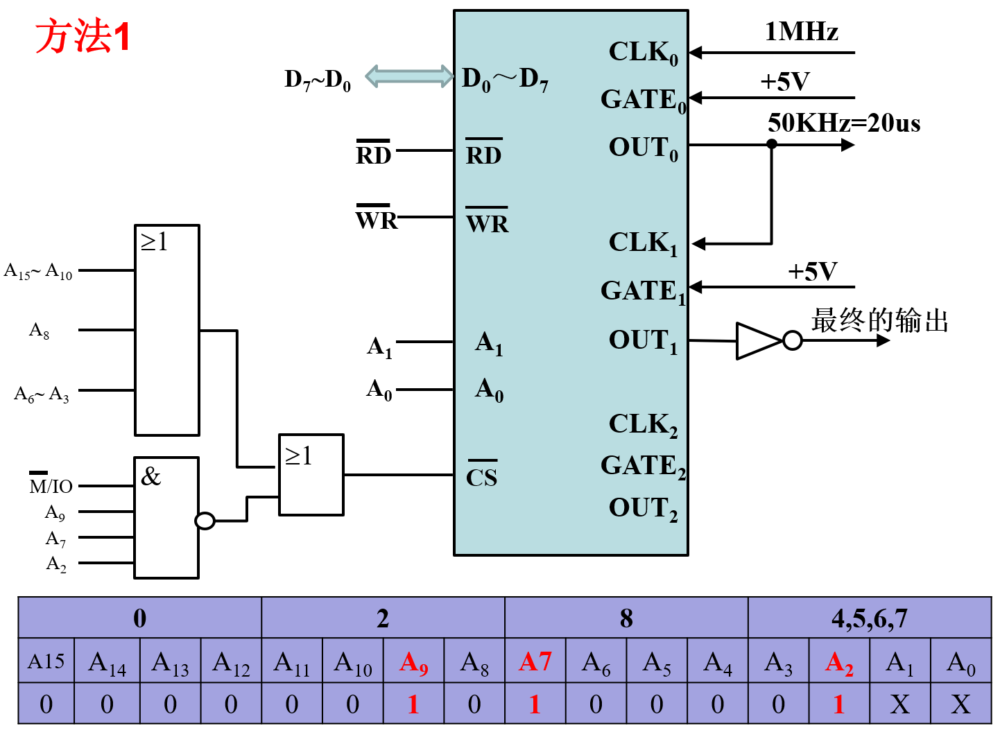

第一章节
P18 1.1将下列十进制数转换成二进制数 重点
（5）11.3
11=1011B
0.3=0.01001 1001 1001B
假如要求取4位小数，则0.3=0.0100B 11.3=1011.0100B
（6）511
1.2将下列二进制数转换成十六进制数
（2）1101 0010 11B
（4）0100 0000 1010 1B
（5）01111111.11B
1.3 将下列十六进制数转换成二进制数和十进制数 重点
（1）78H
（2）0A6H
1.8 已知a=0011 1000B，b=1100 0111B，计算下列逻辑运算：重点
（1）a AND b

（2）a OR b
（3）a XOR b
（4）NOT a
1.9 设机器字长为8位，写出下列各数的原码和补码：
（1）+ 101 0101B
（2）-101 0101B
（5）+100 0000B
（6）-100 0000B
1.11 设机器字长为8位，已知下列两组为a和b的原码，求[a+b]补和[a-b]补，并判断结果是否溢出？重点
（1）[a]原=1110 1011B， [b]原=0100 1010B
负数的补码求解：（1）原码除最高位取反 （2）加1
[a]补=1001 0101B
b为正数，补码等于原码， [b]补=0100 1010B
1.15 设下列4组为8位二进制补码表示的十六进制数，计算a+b和a-b，并判断结果是否溢出？
（4） [a]补= 37H, [b]补= 0C7H, a+b= [a]补+ [b]补
补充内容
十进制数66.5转换成八进制数是
第二章节
P31 2.1微处理器内部结构由哪几部分组成？阐述各部分的主要功能？
（1）算术逻辑单元ALU：完成所有的运算操作； （2）工作寄存器：暂存寻址信息咍计算过程中的中间结果； （3）控制器：完成指令的读入、寄存和译码，并产生控制序列，使ALU 完成指定操作； （4）I/O 控制逻辑：处理I/O 操作。
2.6 8086/8088 微处理器内部有哪些寄存器？重点
8086CPU内部有14个16位寄存器，其中8个通用寄存器（4 个数据寄存器AX、BX、CX、DX，4个地址指针/变址寄存器SI、DI、SP、BP），4个段寄存器（CS、DS、ES、SS），2 个控制寄存器（指令指针IP，微处理器状态字PSW）。
2.11将十六进制数62A0H与下列各数相加，求出其结果及标志位CF、AF、SF、ZF、OF、和PF的值：重点
（3）CFA0H
2.14 写出下列存储器地址的段地址、偏移地址和物理地址： 重要
（1）2134:10A0
2.15 给定一个数据的有效地址为2359H，并且(DS)=490BH，求该数据的物理地址。重点
2.16 在存储器有一块254B的连续存储区域，设其末单元的逻辑地址为1412：F2BC，写出这个存储区域首末字节单元的物理地址。
第三章节
P54 3.1.写出完成下列要求的变量定义语句。
（1）在变量var1中保存6个字变量：4512H, 4512, -1, 100/3, 10H, 65550;
var1 DW 4512H, 4512,-1,100/3, 10H,65530
（2）在变量var2中保存字符串：'BYTE','WORD','word';
var2 DB ’BYTE’,’word’,’WORD’
（4）在缓冲区buf2中，保存5字节的55H,再保存10字节的240,并将这一过程重复7
buf2 DB 7 DUP (5 DUP（55H),10 DUP (240))
3.2 设变量 var1 的逻辑地址为0100：0000，画出下列语句定义的变量的存储分配图：
var1 DB 12，－12，20/6，4 DUP（0，55H）
var2 DB ‘Assemble’
var3 DW ‘AB’, ‘cd’,‘E’
var4 DW var2
var5 DD var2
3.3 已知下列一组语句： 2022年10月18号 大班讲解
ORG 1000H
VAR DW 3,$+4,’A’,12H
CNT EQU $-VAR
DB 20/3,0BH,CNT,1FH
画出内存分配图
3.4 写出下列MOV指令中源操作数的寻址方式（设VAR1为字型变量,N为常数）。重点
第四章节
P140 4.3 设（DS）＝2000H，（BX）＝0100H，（SI）＝0002H，（20100）＝3412H，（20102）＝7856H，（21200）＝4C2AH，（21202）＝65B7H，求下列指令执行后AX寄存器的内容。
4.4 执行下列指令后，DX寄存器中的内容是多少？
4.5 如果堆栈的起始地址为2200:0000，栈底为0100H，（SP）＝00A8H，求:
（1）栈顶地址；
（2）SS的内容；
（3）再存入数据5678H，3AF2H后，SP的内容。
4.8 按下列要求写出指令。重点
（1）将AX寄存器的低4位清零，其余位不变；
AND AX，0FFF0H
（2）将BX寄存器的低4位置1，其余位不变；
OR AX，000FH
（3）将AL寄存器的低4位保持不变，高4位取反；
XOR AL，0F0H
（4）测试BX中的位1和位2，当这两位同时为0时将AL置0FFH，否则AL清零；

（5）测试BX中的位1和位2，当这两位有一位为0时将AL置0FFH，否则AL清零
（6）将AL中保存的字母ASCII码变换成相应的大写字母的ASCII码；
AND AL，5FH SUB AL,20H
（7）将AL中保存的字母ASCII码变换成相应的小写字母的ASCII码；
OR AL，20H ADD AL,20H
（8）将AX中的各位取反；
XOR AX，0FFFFH 或者 NOT AX
（9）将DX中的低7位取反，高9位不变；
XOR DX，007FH
（10）将CX中的低8位与高8位互换。
XCHG CH，CL
4.9 写出完成下述功能的程序段：
4.15 设(BX)=1011 1011B，变量VAR的内容为0011 0010B，求下列指令单独执行后BX的内容。
第五章节
8086CPU系统复位信号至少保持4个时钟周期的高电平，上电复位后CS=FFFFH ，IP=0000H ，执行的第一条命令的物理地址是 FFFF0H。 重点


第六章节
P210 6.10 利用全地址译码将6264芯片接在8088的系统总线上，其所占地址范围为00000H~03FFFH，试画连接图。写入某数据并读出与之比较，若有错，则在DL 中写入01H；若每个单元均对，则在DL写入EEH，试编写此检测程序。 重点
利用全地址译码将6264 芯片接在8088 的系统总线上， 其所占地址范围为00000H~03FFFH。第一片6264的寻址范围为00000-01FFFH，第二片6264的寻址范围为02000-03FFFH
6.18 在8086 CPU 工作在最小方式组成的微机系统中，扩充设计16kB 的SRAM 电路，SRAM 芯片选用Intel 6264,内存地址范围为70000H~73FFFH，试画出此SRAM 电路与8086 系统总线的连接图。
第七章节
P242 7.7 8086 CPU 有 20 条地址总线,可形成 1MB 的存储器地址空间,可寻址范围为00000H - FFFFFH;地址总线中的 16 条线可用于I/O 寻址,形成 64KB 的输入输出地址空间,地址范围为 0000H -FFFFH ;PC机中用了10条地址线进行I/O 操作,其地址空间为 1KB ,可寻址范围为 000H-3FFH。 重点
7.23 在8088 CPU 工作在最小(大)方式组成的微机系统中，利用74LS244设计一个输入端口，分配给该端口的地址为04E5H，试画出连接图。

7.24 在上题的基础上，利用74LS374设计一个输出端口，分配给该端口的地址为E504H，试画出连接图。若上题中输入端口的bit3、bit4和bit7同时为1，将内存BUFFER开始的连续10个字节单元的数据由E504H端口输出；若不满足条件，则等待。试编写程序。
7.25 在8086最大系统中，分别利用2片74LS244和74LS273设计16位输入和输出接口，其起始端口地址为504H、506H，画出硬件连接图。了解
第九章节
P300 9.8 在8088最小系统中，8253的端口地址为284H～287H。系统提供的时钟为1MHz，要求在OUT0输出周期为20微秒的方波，在OUT1输出周期为200微秒，其中每周期为负的时间是180微秒的信号。请编写8253的初始化程序。

第十章节
10.12 如果 8255A 的端口地址为300H～303H，A 组和B 组均为方式0，端口A 为输出，端口B为输入，PC3～PC0 为输入，PC7～PC4 为输出，写出8255A 的初始化程序段；编程实现将从端口C 低4 位读入的值从高4 位送出。
x; 8255三步走就是（1）对控制字写入；（2）读入端口数据；（3）写入端口数据。 总结就是 写、读、写MOV DX,0303H ;控制字端口地址MOV AL,10000011B；;根据上图写入方式，输入输出口OUT DX,AL ;写入固定模式
MOV DX,0302H; 找到C口的地址IN AL,DX ;读取C口的数据
MOV CL,4 ;需要左移4次SHL AL,CL ;逻辑左移MOV DX,0302H; 可以省略OUT DX,AL ; C口写入数据10.13 在实际应用中经常需要检测设备的状态，并进行指示。在 8086 最小方式系统下，有一片8255A，其分配的端口地址为8F00H～8F07H 中的奇地址，外部设备产生的状态有16个（K15～K0），要求采用4 个发光二极管来指示开关量中“1”的个数。（1）画出8255A的连接图；（2）编写程序段实现连续检测并显示。
xxxxxxxxxx; 8255三步走就是（1）对控制字写入；（2）读入端口数据；（3）写入端口数据。 总结就是 写、读、写MOV DX,8F07H ;1 控制方式的写入MOV AL,10010010BOUT DX,AL
REPEAT:MOV DX,8F03HIN AL,DX;读取B口的开关量XCHG AL,AH
MOV DX,8F01HIN AL,DX;读取A口的开关量XCHG AL,AH
MOV BL=0; 记录开关量中“1”的个数CLC ;清除Cy标志位MOV CX,16L1: SHR AX,1 ;逻辑右移，为了把最低位给cy ADC BL,0 ;带进位的加法，相当于BL=BL+0+Cy LOOP L1 ;循环的次数为CX，16次 MOV DX,8F07H ;3 C口写入MOV AL,BL ; 把开关量中“1”的个数给ALOUT DX,ALJMP REPEAT